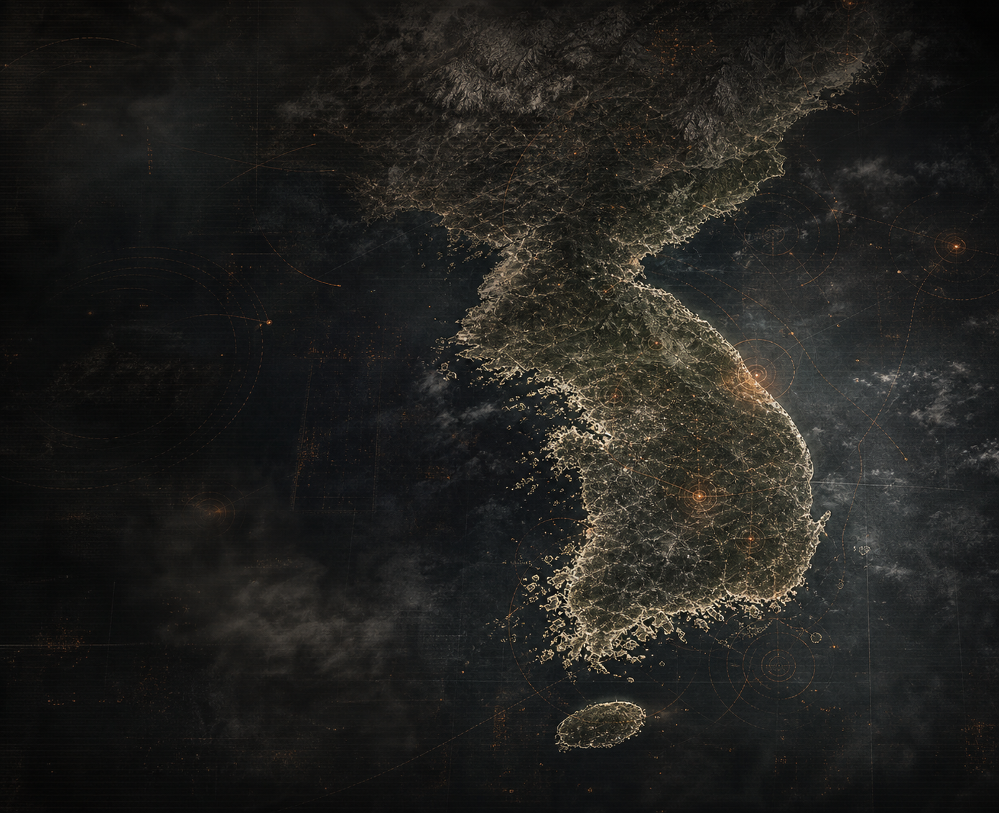

해안 격리선 외부 활동 감지
강원도 동해안 격리선 외부에서 미확인 열원 신호가 감지되었습니다.
ORACLE KOREA BRANCH // KR-INIT-001
한국지부 지휘관용 원격 통제 인터페이스
카드를 좌우로 밀어 봉쇄·자원·신뢰·평가를 조정하고, 제한된 정보 속에서 한국지부의 생존을 결정하십시오.

강원도 동해안 격리선 외부에서 미확인 열원 신호가 감지되었습니다.
강원 감시 구역 내부의 활동 수치가 상승했습니다.
현재 봉쇄선은 안정적으로 유지되고 있습니다.


당신의 선택이 기지의 생존과 다음 기록을 결정합니다.
플레이 방식 확인 →
COMMANDER
PILEHEAD